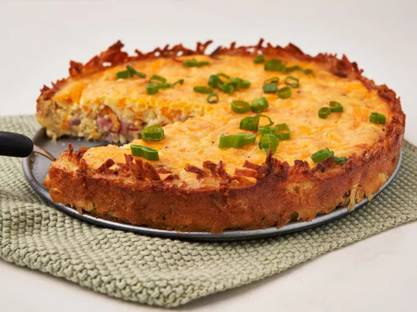

Hash Brown Crust Quiche

Home
Description
Hash brown crust quiche is a savory, hearty dish that combines the classic flavors of a quiche with a crispy, golden potato base. Instead of using a traditional pastry crust, this version lines the quiche dish with shredded hash browns, which are pressed and baked until crisp, forming a flavorful and gluten-free shell. The filling typically includes a mixture of beaten eggs, cheese, cream, and various add-ins such as spinach, bacon, or mushrooms, creating a satisfying meal that's perfect for breakfast, brunch, or even dinner.
To make hash brown crust quiche, start by pressing thawed and well-drained hash browns into a greased pie dish, forming an even layer on the bottom and up the sides. The crust is pre-baked to ensure it holds its shape and becomes crisp. Meanwhile, the egg mixture is prepared with a blend of whisked eggs, cream or milk, shredded cheese, and your choice of vegetables or meats. Once the crust is ready, the filling is poured in and the dish is baked until the center is set and the top is lightly golden. The result is a delicious and satisfying quiche with a unique, crunchy twist.
Ingredients
- 4 cups shredded hash brown potatoes, slightly thawed
- 6 tablespoons butter, divided
- seasoning salt or garlic powder to taste
- 6 large eggs, divided
- 1 cup diced cooked ham
- 1/3 cup finely diced red bell pepper
- ¼ cup chopped green onion, plus more for garnish
- 1 cup shredded Cheddar cheese
- 1 cup heavy cream
- salt and pepper to taste
Steps
- Preheat the oven to 425 degrees F (220 degrees C).
- Place hash browns in a medium bowl. Melt 5 tablespoons butter and pour over hash browns, season with seasoning salt or garlic powder as desired. Add 1 egg, mix well and press mixture onto the bottom and sides of a 9-inch spring form pan or pie dish.
- Bake in preheated oven until potatoes are golden brown and crispy around the edges, about 25 to 30 minutes.
- While crust bakes, melt remaining tablespoon of butter in a medium skillet over medium-high heat. Add ham, pepper, and green onion; cook and stir until bell pepper slightly softens, about 4 minutes. Remove from heat.
- When crust is ready, spread ham mixture over the bottom; sprinkle cheese evenly on top. Whisk remaining 5 eggs and cream in a medium bowl; add salt and pepper to taste and mix until well blended. Pour mixture evenly over ham and cheese mixture.
- Reduce oven temperature to 350 degrees F (175 degrees C.) Bake in the preheated oven until filling is puffed and quiche is lightly browned around the edges, about 35 minutes.